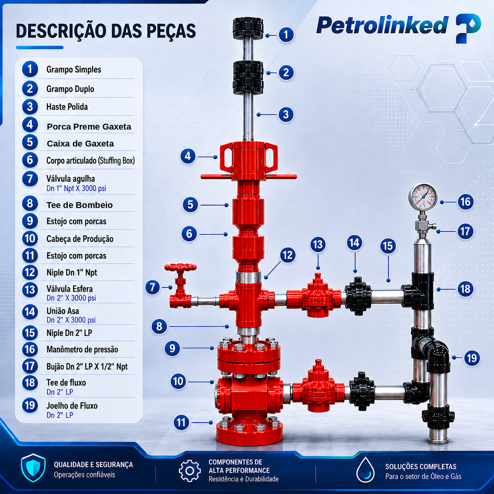

Objetivo
O Objetivo da Unidade de Produção de Poço Terrestre (UPPT) é estabelecer critérios para operação segura, controle e monitoramento do fluxo de hidrocarbonetos (petróleo e gás natural), em unidades de superfície dos poços produtores terrestres.

Aplicação
As principais aplicações da UPPT são:
- Controle de fluxo produzido
- Sistemas de teste de produção
- Monitoramento controlado da pressão do poço
- Isolamento do poço em condições de emergência
- Bancadas de treinamento e simulação
Descrição Geral
A UPPT é o conjunto modular montado sobre base (Skid) destinadas ao controle, bloqueio, monitoramento e direcionamento do fluxo de produção de poços de petróleo em sistema OnShore. Projetada para operar como interface entre a Cabeça de Poço e o sistema de escoamento, permitindo operações seguras de produção, teste e intervenção.
Sistema projetado para operação manual, permite bloqueio duplo, adequado para ambientes onshore e condições severas.
Características Técnicas
Normas Aplicáveis (Referência)
Descrição da Operação
Manutenção e Inspeção
Procedimentos recomendados de manutenção preventiva:
Benefícios da UPPT Fornecida pela PLKD
Certificações e Conformidades
A PLKD mantém parcerias com fornecedores internacionais qualificados e certificados conforme normas api, garantindo conformidade com os mais altos padrões de segurança, qualidade e desempenho operacional.
Aprovação e Revisão

Lucas
Engenheiro de Produção
Jose Luiz
Engenheiro de Produção
Luiz Antonio
Engenheiro de Produção
Naiane Andrade
Gestão Comercial
David Ribeiro
Coordenador Comercial
Luiz Angelo
Gestão Comercial

Igor Carneiro
Diretor Financeiro
Hennessy Amaral
Administrativo e Financeiro

Lourenço Carlos Loy
Engenheiro de Produto
Larissa Oliveira
Gestão de Qualidade
| Versão | Data | Descrição |
|---|---|---|
| 00 | 10/05/2026 | Emissão Inicial |
| 01 | 26/05/2026 | Revisão: Seções de manutenção e certificações expandidas |